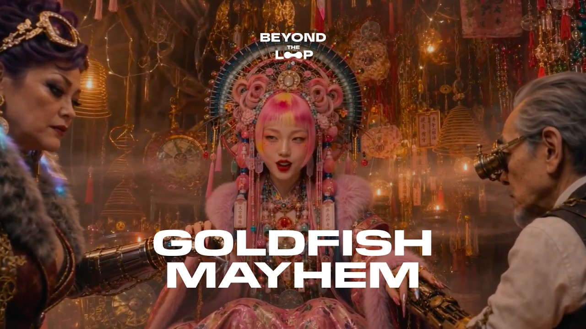

Official trailer. A Cantonese cyberpunk world of kung fu and robo-cops: three sisters save their aunt from cyber elites.
Goldfish Mayhem
- Year
- 2026
- Role
- Director
- Notes
- Full film. A Cantonese cyberpunk action-comedy short set on a fictionalised street in southern China.
BOBO, Fengshui Girl and Xixili attempt to rescue foster mother Auntie Fen and uncover a data-immortality experiment run by the city’s elite.
Inspired by Junie Lau’s upbringing in Foshan and Hong Kong action cinema.
Final film of Beyond the Loop Season 2, a Wonder Studios anthology.